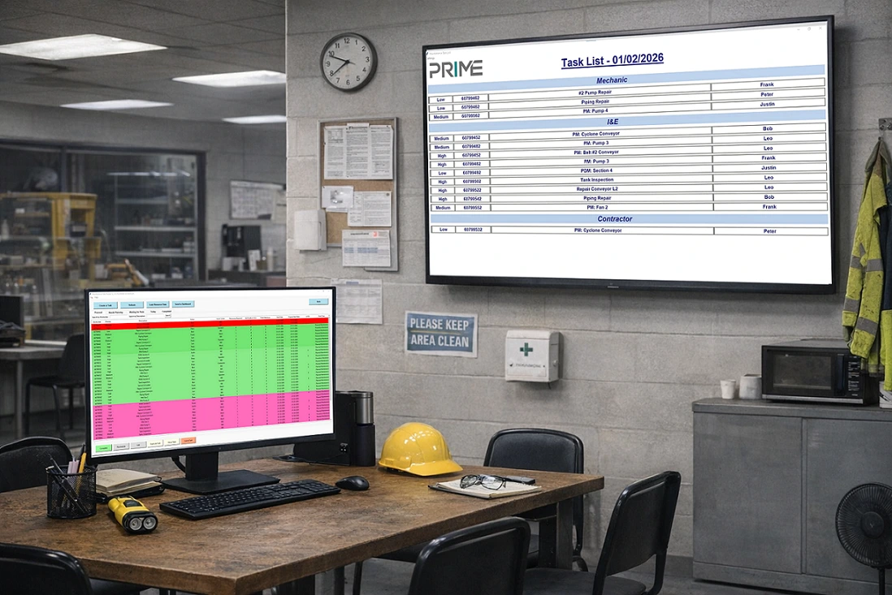

Maintenance Scheduler
A maintenance planning and scheduling application for industrial environments.
- Planning boards and resource loading
- Task prioritization
- Maintenance performance metrics
- Exporting, printing, and reporting
SUPPORTING MAINTENANCE EXECUTION
Maintenance scheduling, scanning workflows, and custom software from Prime Reliability Group. Discuss your process and the tools that could support it.
Explore reliability consultingPRIME SUITE™ RELIABILITY TOOLS

A maintenance planning and scheduling application for industrial environments.
Barcode-based scanning workflows for storerooms, production, and maintenance.
Desktop or mobile applications scoped around your maintenance and operations processes.
Contact us to discuss requirements, compatibility, deployment, and availability.
Already using our tools? Email support@primereliabilitygroup.com for product support.
Discuss your workflow